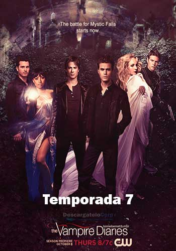

| Primera Temporada | |||||||||
| La primera temporada comienza después del terrible accidente que mató a los padres de Elena Gilbert, una adolescente de 17 años que vive en Mystic Falls, una ciudad de Virginia, y que intenta seguir adelante con su vida, sin imaginarse que conocerá a un nuevo, guapo y misterioso estudiante, llamado Stefan Salvatore, quien esconde un secreto que muy pronto será descubierto con la llegada de su hermano Damon Salvatore. Elena y los habitantes de Mystic Falls se ven envueltos entre seres sobrenaturales: Vampiros, Brujas, Hombre lobo, Híbridos, entre otros. | |||||||||
| Segunda Temporada | |||||||||
| La segunda temporada se centra principalmente en la llegada de la réplica de Elena, Katherine Pierce, y las razones de por qué regresó a Mystic Falls (para encontrar la piedra lunar y romper la maldición de los hombres lobo que sólo se pueden transformar en luna llena sin su voluntad). También se introducen los hombres lobo. El tío de Tyler, Mason Lockwood, un hombre lobo, llega a la ciudad después de la muerte de su hermano, y le habla a Tyler sobre la llamada «maldición Lockwood» que tiene su familia desde hace siglos. También hay nuevos vampiros, como Caroline, quien es convertida por Katherine (ya que ella tenía la sangre de Damon en su sistema y Katherine la asesina). Se revela que Elena no es la única réplica Petrova. Elena tiene que ser sacrificada para romper la maldición de Klaus, quien es el mayor vampiro de la historia, y que ahora está tras ella. | |||||||||
| Tercera Temporada | |||||||||
| La serie fue renovada para una tercera temporada, que se estrenó el 15 de septiembre de 2011. Esta temporada contó con el ascenso de Klaus (Joseph Morgan) a personaje principal. El argumento de la temporada se centró en la historia de la familia de los vampiros Originales, además de revelarse el auténtico motivo por el que Klaus quería convertirse en híbrido y el por qué de querer a Stefan de su parte. La temporada contó con la incorporación de Claire Holt como Rebekah, una de los Originales que en el pasado tuvo una relación amorosa con Stefan; Jack Coleman como Bill Forbes, el padre de Caroline, que regresa a Mystic Falls para intentar ayudar a su hija; Persia White como Abby Bennet, la madre de Bonnie; Torrey DeVitto como Meredith Fell, una médicoo que se interesará mucho por la rapidez de recuperación de Alaric; y Alice Evans como Esther, la madre de los Originales; así como el regreso de Daniel Gillies como Elijah. | |||||||||
| Cuarta Temporada | |||||||||
| La serie fue renovada por una cuarta temporada el 4 de mayo de 2012, que se estrenó el 11 de octubre de 2012. Comienza con el conocimiento de que todo está en transición. Elena se enfrenta a su peor pesadilla cuando se despierta después del accidente y descubre que murió con la sangre de Damon en su sistema, que ahora deberá soportar la transición para convertirse en una terrible vampiresa – o enfrentarse a una muerte segura. Stefan y Damon se desgarran aún más por cómo ayudar a Elena, que se tiene que adaptar a una vida que ella nunca quiso, y todo el mundo tiene que hacer frente al caos, más una complicación surgida que deberán resolver por el bien de Elena, Damon y Stefan. | |||||||||
| Quinta Temporada | |||||||||
| La serie fue renovada para una quinta temporada el 11 de febrero de 2013, la cual se estrenó el día 3 de octubre de 2013. Esta temporada se enfoca directamente en la mitología de las réplicas. Asimismo, aparecen los Viajeros, una clase de brujos que están condenados a no poder establecerse en ningún lugar, quienes buscan romper la maldición de los brujos reales, así como hacer desaparecer toda magia que no sea pura y lo que éstos hayan creado, como los vampiros. Por otra parte, se pone de manifiesto la fragilidad del Otro Lado y la existencia de un lugar más allá de este al que todos los seres sobrenaturales están siendo arrastrados. | |||||||||
| Sexta Temporada | |||||||||
| La serie fue renovada para una sexta temporada el 13 de febrero de 2014 y cuenta con el regreso de Alaric (Matthew Davis) y la promoción de Enzo (Michael Malarkey) como personajes principales. También marca la despedida de Nina Dobrev, Steven R. McQueen y Michael Trevino como miembros del elenco principal. Fue estrenada el 2 de octubre de 2014, y se centra principalmente en la lucha de Damon y Bonnie por volver a reunirse con sus amigos y seres amados. Así mismo, se introduce una nueva amenaza en la forma de Kai, un brujo que debe absorber la magia de otros para poder practicar y busca ser el líder del aquelarre Gemini. También se muestra la lucha de Caroline contra el dolor por haber perdido a su madre y por sus sentimientos por Stefan. Finalmente, tras el regreso de Lily, la madre de Stefan y Damon, quien busca traer de vuelta a unos híbridos brujo-vampiros conocidos como los Herejes, quienes fueron desterrados por el aquelarre Gemini. | |||||||||
| Séptima Temporada | |||||||||
| El 11 de junio de 2015, la serie fue renovada para una séptima temporada, que fue estrenada el 8 de octubre de 2015. Se centra principalmente en el duelo de Damon tras perder a Elena y sus desesperados intentos por mantenerse como una buena persona aguardando su reencuentro. También lidia con la llegada de Lily Salvatore y su familia de Herejes, quienes buscan traer de vuelta a la vida a un peligroso vampiro llamado Julian, su antiguo líder y pareja de Lily. Asimismo, Caroline descubre que en su vientre lleva a los gemelos de Jo y Alaric gracias a un hechizo que el aquelarre de los Gemini lanzó antes de ser asesinados por Kai. También introduce una doble narrativa, que conjuga el presente con un salto a tres años más tarde, donde una poderosa cazadora persigue a los vampiros y los encierra en una piedra que muestra sus peores pecados. Explora también el pasado de Enzo y su relación con una misteriosa organización conocida como «La Armería», que experimenta con entes sobrenaturales y guarda una peligrosa criatura que logra controlar a Damon y Enzo, llevándolos a una espiral de asesinatos. La temporada también incluye un evento crossover con la tercera temporada de The Originals y presenta una participación de voz de Nina Dobrev. | |||||||||
|  | |||||||||